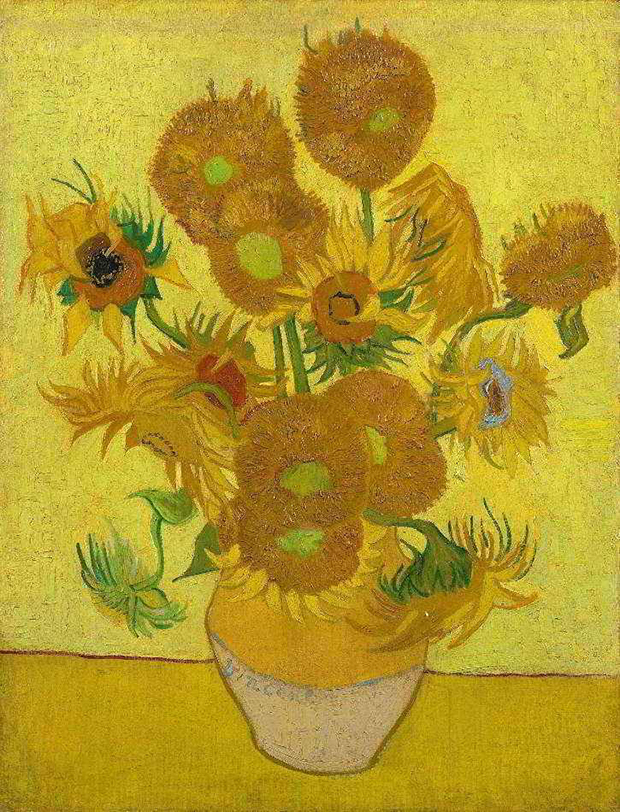
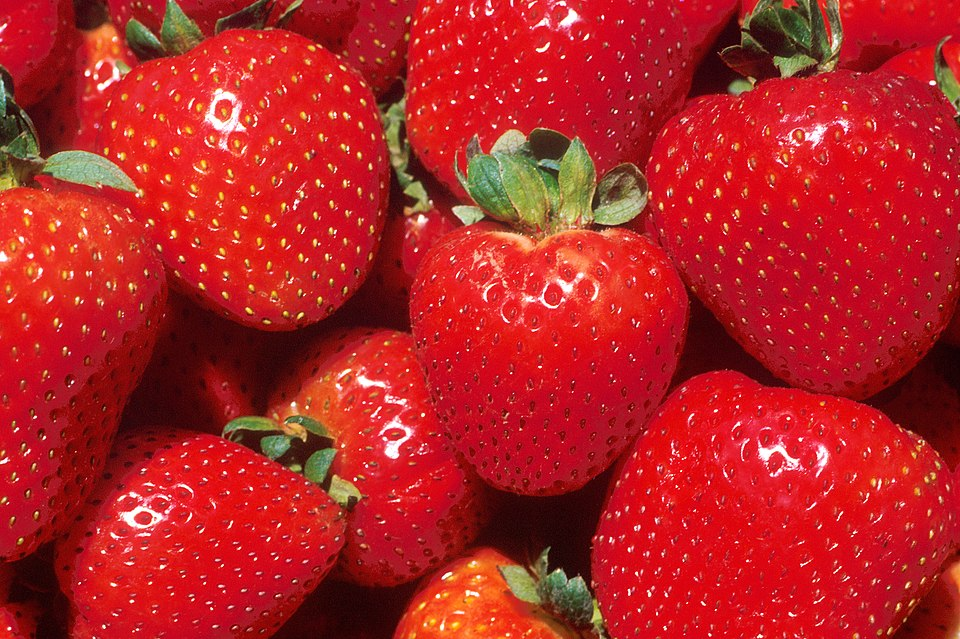
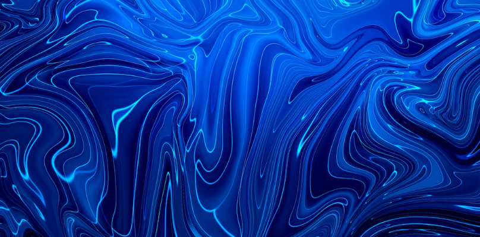
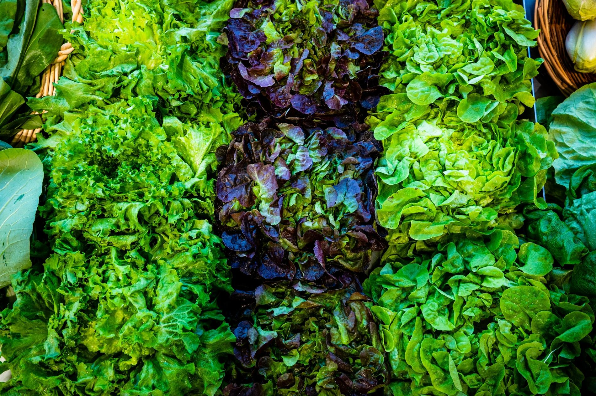
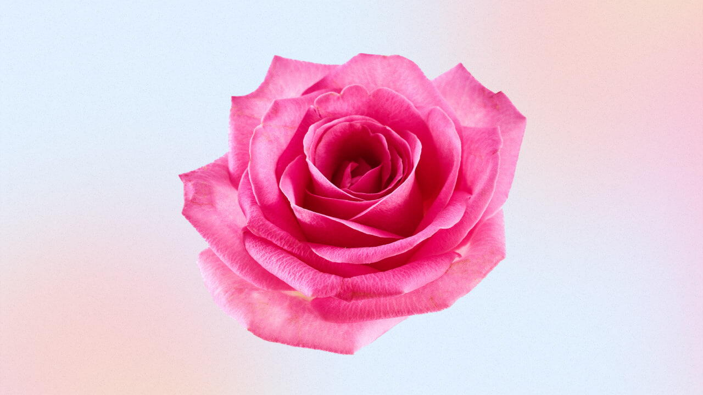
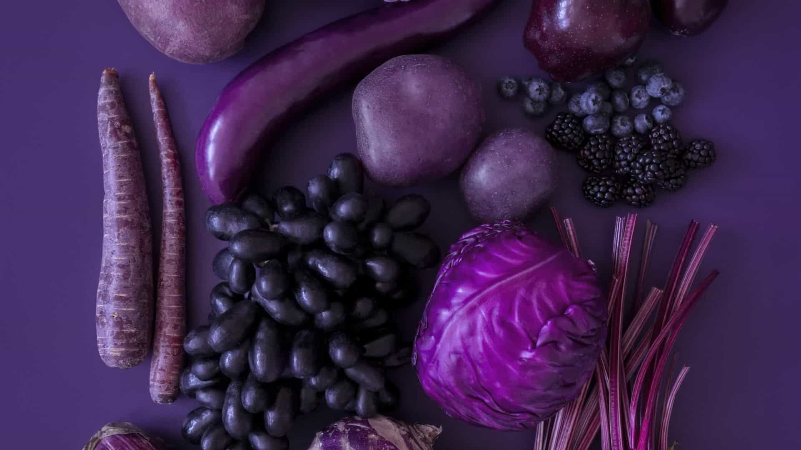
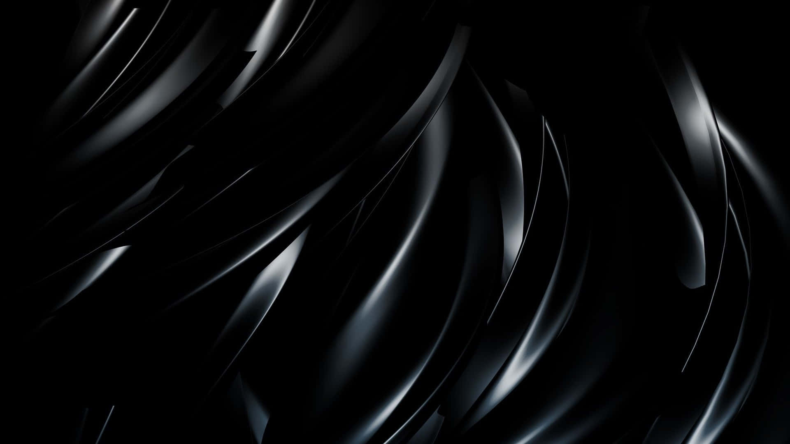
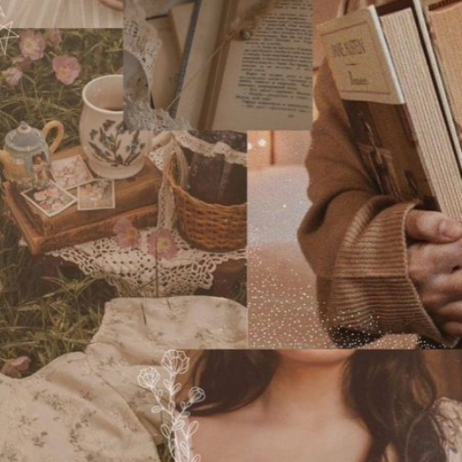

Amarelo

Frequentemente associado à felicidade, otimismo, mas também com aspectos contraditórios.
Remete a:
- Alegria
- Nostalgia
- Infância
Vermelho

Cor da intensidade, paixão, urgência, perigo e amor.
Remete a:
- Amor
- Aviso
- Cuidado
Azul

Evoca tranquilidade, harmonia, confiança e serenidade.
Remete a:
- Paz
- Calmaria
- Mar
Verde

Ligado à esperança, natureza, crescimento e sorte.
Remete a:
- Evolução
- Conexão com a natureza
- Futuro
Laranja
Representa energia, criatividade e entusiasmo.
Remete a:
- Agitação
- Reflexão
- Prosperidade
Rosa

Frequentemente relacionado ao amor, união e romantismo.
Remete a:
- Romances
- Conforto
- Feminilidade
Violeta/roxo

Associado à magia, mistério e espiritualidade.
Remete a:
- Fantasia
- Riqueza
- Desconhecido
Branco
Simboliza paz, pureza, limpeza e simplicidade.
Remete a:
- Paz
- Religião
- Infância
Preto

Transmite elegância, poder, luto ou autoridade.
Remete a:
- Sabedoria
- Conhecimento
- Obscuro
Cinza
Associado à neutralidade, monotonia ou sofisticação.
Remete a:
- Indecisão
- Sentimento "em cima do muro"
- Infância
Marrom

Representa conforto, rusticidade ou estabilidade.
Remete a:
- Indecisão
- Sentimento "em cima do muro"
- Infância
Dourado
Ligado à riqueza, prestígio e valor.
Remete a:
- Dinheiro
- Poder
- Prestígio
Prata
Associado à modernidade, tecnologia e sofisticação.
Remete a:
- Atualidades
- Seriedade
- Respeito